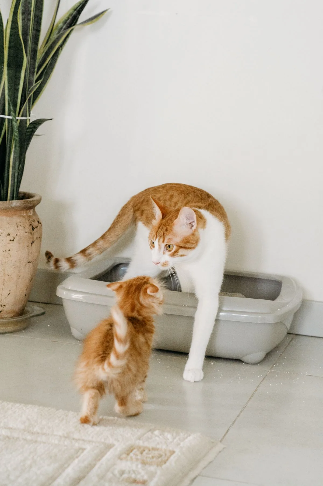

Pet Tech
Pet tech for cat owners first: automatic litter boxes, feeders and cameras that save time without stressing the cat.

We may earn a commission if you buy through links on this page. As an Amazon Associate I earn from qualifying purchases.
Guides in this category
More guides in this category are planned as the 30-day test runs. Nothing is published until it passes the checks on the editorial method page and the owner approves it.
What we are testing
Automatic litter boxes first — the highest-ticket pet item with the clearest buyer question: is it worth it, and will the cat use it? Feeders and cameras follow.
Products covered so far
- Litter-Robot 4
- Furbo 360° dog camera